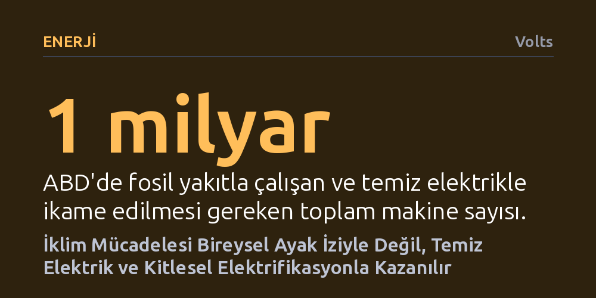

ENERJI · Volts · 2026-10-08
Bireysel karbon ayak izine odaklanmak yerine şebekeyi temizleyip makineleri elektriğe geçirmek, toplam kirliliğin yaklaşık dörtte üçünü ortadan kaldırabilir. Gerçek iklim dönüşümü kişisel tüketim kısıtlamalarından değil, altyapıyı dönüştüren kolektif ve yapısal eylemlerden doğuyor.
İklim krizinin faturasını bireysel vicdan azabına kesen algıyı yıkarak, asıl çözümün temiz elektrik ve altyapıyı dönüştüren kolektif eylemde yattığını gösterir.

İklim krizi tartışmalarında yıllardır bireylere aynı reçete dayatılıyor: Uçuşlarınızı azaltın, plastik poşet kullanmayın, kişisel tüketiminizi kısarak karbon ayak izinizi küçültün. Oysa bu yaklaşım kendiliğinden ortaya çıkmadı. Akademik bir kavram olan karbon ayak izi, 2000'li yılların ortalarında petrol devi BP tarafından yürütülen ve yılda 100 milyon doları bulan devasa bir reklam kampanyasıyla küresel bilince kazındı. Amaç, fosil yakıtlara bağımlı enerji mimarisinin sorumluluğunu şirketlerden alıp sıradan tüketicilerin vicdanına yüklemekti.
İklim politikaları uzmanı Leah Stokes, bu suçluluk paradigmasının artık çöpe atılması gerektiğini savunarak yerine "karbon dalgası" kavramını öneriyor. Fosil yakıt sisteminin sınırları içinde kendi ayak izini küçültmeye çabalamak yerine, sistemi dönüştürmek için örgütlenen insanların kolektif gücüne odaklanmak gerekiyor. Bu yaklaşımda her birey tek başına bir su damlasıyken, yan yana geldiklerinde sistemi kökten değiştiren bir dalgaya dönüşüyor; nitekim "yeterince büyük bir dalga, tüm ayak izlerimizi silebilir."
Sera gazı salımları genellikle karmaşık pasta grafiklerle sunulur: Elektrik üretimi, binalar, ulaşım, ağır sanayi ve tarım gibi birçok dilim bir araya gelerek içinden çıkılmaz bir tablo oluşturur. Ancak Stokes, sorunun bu denli parçalı görünmesine karşın çözümün şaşırtıcı derecede yalın iki temel adıma dayandığını vurguluyor: Elektrik üretimini temiz kaynaklara geçirmek ve ardından toplumun tüm makinelerini bu temiz elektrikle çalıştırmak.
İlk adım, elektrik şebekesindeki kömür ve doğalgaz santrallerini devreden çıkararak sistemi güneş, rüzgâr, jeotermal, batarya depolama ve mevcut nükleer kapasiteyle karbonsuzlaştırmaktır. Şebeke temizlendiğinde geriye kalan sektörlerin çözümü de birbirine bağlanır. Benzinli araçlar bataryalı elektrikli modellere dönüştüğünde doğrudan temiz şebekeden beslenir; binalardaki doğalgazlı kazanlar ve su ısıtıcıları yüksek verimli ısı pompalarıyla değiştirildiğinde sıfır emisyona ulaşır. Hatta gıda ve kâğıt fabrikalarında gereken buhar bile endüstriyel ısı pompalarıyla üretilebilir. Bu iki adımlı strateji, toplam karbon kirliliğinin yaklaşık dörtte üçünü tek başına ortadan kaldırma gücüne sahiptir.
Sistemsel dönüşüm soyut bir kavram gibi algılansa da aslında etrafımızdaki somut nesnelerden oluşur. Mühendis Saul Griffith'in hesaplamasına göre yalnızca ABD'de fosil yakıt yakarak çalışan yaklaşık bir milyar makine bulunuyor. Bireylerin plastik pipetler veya bez çantalar yüzünden kaygı duyması iklim krizini çözmeye yetmiyor; çünkü asıl hedef bu makineleri teker teker temiz elektrikle çalışan alternatifleriyle değiştirmek olmak zorunda.
Bu bakış açısı, bireylerin kendi yaşamlarında ve çevrelerinde üstlenebilecekleri somut sorumlulukları tanımlar: Evdeki kombiyi, çocuğunuzun okulundaki ısıtma sistemini ya da kamu araç filosunu elektrikliye geçirmek. Kendi evine ısı pompası taktıran bir kişi, yalnızca kişisel emisyonunu düşürmekle kalmaz; o yapının altyapısını kalıcı olarak dönüştürür ve kendisinden sonra orada yaşayacak herkesin fosilsiz bir ortamda barınmasını sağlar. Dönüşüm, bireysel alışkanlıkları cezalandırmak yerine altyapıyı kalıcı biçimde yenilemek anlamına gelir.
Bu fikirlerin hayata geçmesi masa başında hazırlanan raporlarla değil, siyasetin zorlu koridorlarında verilen yıpratıcı mücadelelerle mümkün oldu. ABD tarihinin en kapsamlı iklim yasası olan Enflasyon Düşürme Yasası'nın (IRA) kabul edilme süreci, perde arkasında binlerce uzmanın, yerel aktivistin ve araştırmacının kolektif emeğine dayanıyordu. Yasanın temelini oluşturan "2035 yılına kadar %100 temiz elektrik" hedefi, önce bir başkan adaylığı kampanyasının parçası olarak filizlendi, ardından kabul gören bir ulusal politika çerçevesine evrildi.
Üstelik bu mücadele steril ortamlarda değil, doğrudan hayatın akışı içinde verildi. Yasanın mimarlarından Stokes, mevzuatın Kongre'den geçmesi için 75 gün boyunca erken doğan ikizlerinin bulunduğu yenidoğan yoğun bakım servisinden canlı yayınlara katıldı, yatak istirahatindeyken kampanyayı koordine etti. Bu deneyim, iklim aktivizminin hazır reçetelerle değil, elini taşın altına koyan insanların doğaçlama kararlılığıyla yürüdüğünü ve demokratik dönüşümün kusursuz kahramanlar değil, ısrarcı topluluklar gerektirdiğini kanıtlıyor.